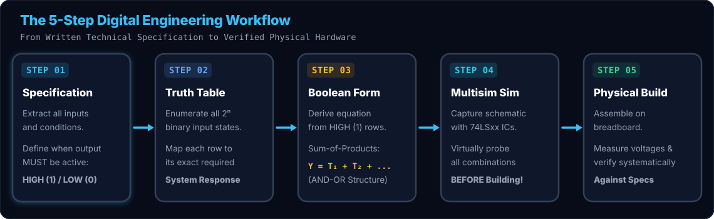
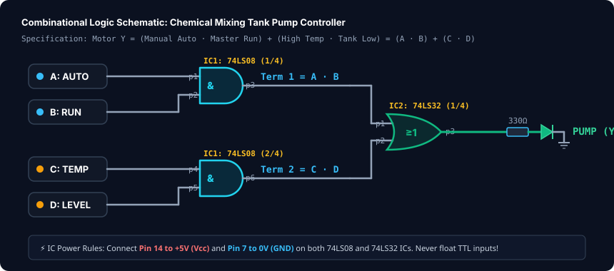

Week 2: Combinational Logic – “Design the Control System”
📘 Knowledge (K)
- Combinational logic fundamentals (outputs depend strictly on present inputs)
- Boolean algebra Sum-of-Products (SOP) syntax and operator precedence
- Pinouts and electrical thresholds for 74LS08 (Quad AND) and 74LS32 (Quad OR)
🛠️ Skills (S)
- Converting functional client specifications into formal mathematical truth tables
- Design combinational logic circuits from truth tables and simulate using Multisim
- Physically assemble components on a breadboard to build a working circuit
🎯 Behaviours (B)
- Disciplined pre-power checks (verifying Vcc and GND prior to energising)
- Predict → Wire → Test → Explain engineering reasoning
- Quality documentation and precise technical evidence recording
Engineering Toolbox: Cumulative Retrieval
In Week 1, you learned the cardinal rules for 14-pin 74LS-series logic ICs. Test your recall before touching any breadboard today:
Which pins MUST connect to the power supply for a 74LS08 or 74LS32?
🔮 Retrieval 2: What happens if an unused TTL input is left disconnected?
If an input pin on a 74LS08 is left open-circuit without a wire connected to ground, what logic state does it assume?
Our digital output will drive an indicator LED from a $+5.0\,\text{V}$ rail. The LED forward voltage drop is $V_F = 2.0\,\text{V}$ and requires $I_F = 15\,\text{mA}$ ($0.015\,\text{A}$). Calculate the ideal series resistor $R$ in Ohms ($\Omega$): $$R = \frac{V_S - V_F}{I_F}$$
Combinational logic circuits have NO memory. The output at this exact microsecond is determined strictly by the present state of the inputs. There is no clock pulse, no feedback loop, and no past memory.
Part 1: How Real-World Decisions Become Digital Logic
Think about how a domestic microwave oven operates safely. When should the magnetron tube energise?
When should the dashboard chime and warning light sound?
Most commercial machines have more than one valid way to activate. For instance, an automatic conveyor can run in either Automatic Production Mode OR Manual Test Mode:
Notice the structure: We have two AND conditions combined together with an OR condition. In digital electronics, this is the foundational architecture known as Sum-of-Products (AND-OR logic).
- Instantaneous response: Sub-nanosecond propagation delays (~10 ns) without waiting for software boot-up.
- Hardware safety interlocks: Cannot freeze, crash, or experience memory corruption like a microcontroller.
- Deterministic verification: Every single input state can be mathematically tested and proven 100% reliable.
Part 2: The 5-Step Digital Design Methodology

- Step 1 (Extract Variables): Identify all binary inputs (switches, sensors) and assign symbols ($A, B, C\dots$). Identify the output ($Y$).
- Step 2 (Exhaustive Table): Calculate the number of rows: $\text{Rows} = 2^n$ (e.g. 3 inputs = 8 rows; 4 inputs = 16 rows). Write binary numbers in ascending order ($000, 001, 010\dots$). Evaluate the specification for every single row.
- Step 3 (Derive Boolean Expression): Find every row where the system output is HIGH ($\text{Output} = 1$). Form product terms (AND) for each HIGH row, then OR the terms together ($\text{SOP}$).
- Step 4 (Multisim Verification): Build the schematic virtually first to catch gate selection errors before cutting physical wires.
- Step 5 (Hardware Build & Test): Wire on breadboard with decoupling, test all states with a multimeter, and document evidence.
Guided Application: The 5-Step Method on a 2-Input Machine Interlock
From: Marcus Vance, Workshop Safety & Maintenance Lead (Precision Machining Ltd)
Subject: Spindle Motor Entanglement Mitigation on Workshop Pillar Drill #3
"Following a recent HSE inspection after an apprentice reached near a spinning 13mm chuck, we require an immediate electrical interlock retrofitted to the 3-phase drill spindle motor relay (Output State, denoted $\text{Spindle}$):
- [Clause 1 — Guarding]: The spindle motor must be physically prevented from turning unless the transparent polycarbonate chuck guard is locked firmly down in position.
- [Clause 2 — Intentional Operation]: Even with the guard closed, the motor must NOT run continuously; it must ONLY run while the operator is actively depressing the spring-loaded floor pedal switch.
- [Clause 3 — Instant Failsafe]: If the guard is flipped up at any time, power must cut within 15ms ($\text{Spindle} = 0$)."
Chuck Guard Sensor
$0 = \text{Open/Hazard}$, $1 = \text{Closed & Safe}$
Operator Foot Pedal
$0 = \text{Released}$, $1 = \text{Pressed}$
IC Selection: 74LS08 Quad 2-Input AND Gate (Gate 1 used):
- Pin 1 (Input A): Jumper to Chuck Guard switch.
- Pin 2 (Input B): Jumper to Foot Pedal switch.
- Pin 3 (Output $\text{Spindle}$): Feeds $330\,\Omega$ resistor → Green LED (spindle active indicator).
- Power Rails: Pin 14 to $+5\,\text{V}$ (Vcc), Pin 7 to $0\,\text{V}$ (GND).
| Row | Guard ($A$) | Pedal ($B$) | Term ($A \cdot B$) | Motor ($Y$) | Safety Interpretation |
|---|---|---|---|---|---|
| 0 | 0 | 0 | 0 | 0 | Idle; guard open, pedal released. |
| 1 | 0 | 1 | 0 | 0 | BLOCKED! Guard open; interlock trips. |
| 2 | 1 | 0 | 0 | 0 | Safe standby; guard closed, awaiting pedal. |
| 3 | 1 | 1 | 1 | 1 | RUN! Guard closed AND pedal down. |
Notice the progression: Client Memo $\rightarrow$ Variable Extraction $\rightarrow$ Truth Table $\rightarrow$ Equation ($\text{Spindle} = A \cdot B$) $\rightarrow$ Breadboard Build. Ready to test your reasoning? On the next slide, choose a real-world engineering mission and apply this 5-step method independently!
Part 2B: Apply the 5-Step Methodology — Select Your Mission
Mission 1: Domestic Microwave Radiation Safety Interlock
To protect users from high-frequency microwave radiation, the cavity magnetron generator (Output State $\text{Magnetron}$) must energise ($1$) ONLY when the user has pressed the Start Button ($A=1$) AND the heavy-duty door latch interlock switch confirms the door is fully closed ($B=1$). If the door latch opens for even a microsecond, the magnetron must instantly cut off ($\text{Magnetron} = 0$).
Start Button
$0 = \text{Released}$, $1 = \text{Pressed}$
Door Interlock
$0 = \text{Open}$, $1 = \text{Closed}$
| Row | Input A | Input B | Output State | Real-World Sensor Condition |
|---|---|---|---|---|
| 0 | 0 | 0 | A=0, B=0 condition | |
| 1 | 0 | 1 | A=0, B=1 condition | |
| 2 | 1 | 0 | A=1, B=0 condition | |
| 3 | 1 | 1 | A=1, B=1 condition |
Based on your completed truth table, which standard single logic gate implements this behaviour?
Part 3: Scaling Up to 4 Inputs — Chemical Mixing Tank
Design the combinational logic interlock for the Reactor TK-402 Coolant Delivery Pump ($\text{Pump}$):
- Condition 1 (Auto Mode): Pump runs if Auto Mode ($A=1$) AND Run Pressed ($B=1$).
- Condition 2 (Emergency Flush): Pump runs if Overheat ($C=1$) AND Fluid Present ($D=1$).
- Quiescent State: Under all other states, the pump remains OFF ($\text{Pump} = 0$).
$0 = \text{Manual}$, $1 = \text{Auto Mode}$
$0 = \text{Standby}$, $1 = \text{Run Pressed}$
$0 = \text{Safe } \le 85^\circ\text{C}$, $1 = \text{Overheat } > 85^\circ\text{C}$
$0 = \text{Reservoir Empty}$, $1 = \text{Liquid Present}$
We translate the client's operational clauses directly into binary product terms:
Boolean Term: $\text{Term}_1 = A \cdot B$
Boolean Term: $\text{Term}_2 = C \cdot D$
| IC Device | Circuit Function | Required Gates |
|---|---|---|
| 74LS08 | Quad 2-Input AND Gates | 2 of 4 gates used (Computes $A \cdot B$ and $C \cdot D$) |
| 74LS32 | Quad 2-Input OR Gates | 1 of 4 gates used (Computes $\text{Term}_1 + \text{Term}_2$) |
| Passive Stage | $330\,\Omega$ Resistor + Green LED | Visual Pump State Indicator (Driven by OR output) |
Part 4: Interactive Combinational Logic Workbench
Active row highlights dynamically as you toggle sensor inputs on the left:
| # | A | B | C | D | Term 1 (A·B) | Term 2 (C·D) | Pump Y |
|---|
Part 5: Logic Schematic & IC Terminal Mapping
Review the exact pin numbers before opening Multisim or touching your breadboard. Every IC terminal has a dedicated role:
| Gate Stage | IC Device | Input Pins | Output Pin |
|---|---|---|---|
| AND Gate 1 | 74LS08 (Gate 1) | Pin 1 (A) & Pin 2 (B) | Pin 3 (Term 1 = A·B) |
| AND Gate 2 | 74LS08 (Gate 2) | Pin 4 (C) & Pin 5 (D) | Pin 6 (Term 2 = C·D) |
| OR Gate 1 | 74LS32 (Gate 1) | Pin 1 (from 7408 p3) & Pin 2 (from 7408 p6) | Pin 3 (Final Output: $\text{Pump}$) |
| Output Load | Indicator Stage | Connects from 74LS32 Pin 3 | Through $330\,\Omega$ to LED Anode |
- Ground Pin 7 on BOTH chips: Connect IC1 Pin 7 and IC2 Pin 7 directly to the $0\,\text{V}$ rail.
- Vcc Pin 14 on BOTH chips: Connect IC1 Pin 14 and IC2 Pin 14 directly to the $+5.0\,\text{V}$ rail.
- Never leave floating inputs: During testing, every gate input must be explicitly wired to either $+5\,\text{V}$ or $0\,\text{V}$.

74LS08 and 74LS32:
Part 6: Multisim Simulation Investigation
Open Multisim and construct the complete combinational circuit before assembling physical hardware. Professional engineers simulate first to verify logic equations and avoid wiring damaged ICs on the bench.
74LS08D(Quad 2-Input AND gate package)74LS32D(Quad 2-Input OR gate package)- 4 × SPST Interactive Switches (Keys: A, B, C, D) tied to Vcc and GND
- 1 ×
PROBEor Output LED with series $330\,\Omega$ resistor
🔮 Pre-Simulation Prediction: The Overlap State
What should happen if BOTH conditions occur at the same time: Auto mode is running ($A=1, B=1$) AND a high temperature condition exists with liquid present ($C=1, D=1$)?
- Did you wire the switches to both $+5\,\text{V}$ and $0\,\text{V}$ so inputs never float?
- Are intermediate voltages measuring close to $0\,\text{V}$ for LOW and $> 3.5\,\text{V}$ for HIGH?
- Does the truth table on Slide 6 match your simulated results 100%?
Part 7: Physical Breadboard Assembly
Assemble your circuit components on the breadboard.
Using your 74LS08 (AND) and 74LS32 (OR) ICs, wire and test the combinational logic controller for the chemical mixing tank:
74LS08 (AND)
IC 2: 74LS32 (OR)
Resistor: $330\,\Omega$
Output: Green LED
Supply: $+5\,\text{V}$ DC
Part 8: Practical Troubleshooting
Spend time testing your circuit, locating any faults, and troubleshooting your breadboard.
Systematically test all 16 input combinations ($A, B, C, D$) against your truth table specification. If the output LED does not behave exactly as expected for any condition, use your DMM and the engineering tips below to isolate and fix the root cause.
Measure directly across Pin 14 ($+5\,\text{V}$) and Pin 7 ($0\,\text{V}$) on both the 74LS08 and 74LS32 with your DMM. A logic IC cannot operate if a power rail jumper is loose or misplaced.
In TTL logic, any input wire left disconnected in open air will float to HIGH ($\approx 1.5\,\text{V}-2.0\,\text{V}$). Ensure all 4 inputs ($A, B, C, D$) are firmly pressed into either $+5\,\text{V}$ or $0\,\text{V}$.
Inspect each wire jumper to confirm it shares the exact same 5-hole vertical strip as the target IC pin. Off-by-one errors are the most common breadboard fault!
Probe 74LS08 Pin 3 ($A \cdot B$) and Pin 6 ($C \cdot D$) with your DMM. Then probe 74LS32 Pins 1 & 2 to confirm the signals actually reach the OR gate inputs.
Check LED polarity (anode/longer leg connects to $330\,\Omega$ resistor, cathode/flat edge connects to GND). Check that your resistor is $330\,\Omega$ (Orange-Orange-Brown) and not $330\,\text{k}\Omega$.
If a state produces unexpected results, check your verified Multisim schematic or the live simulator on Slide 8 to confirm what the gate voltages should be.
Part 9: Engineer Exit Ticket & Wrap-Up
Verify your technical competence before leaving the electronics lab today:
What is the final Boolean equation for our chemical pump controller combining Auto Run and Emergency Flush?
How many total rows are required in a complete truth table for a system with 4 digital inputs?
Ensure your DC bench power supply is powered off, ICs returned to the component tray, and all jumper wires tidied into the storage box. A clean bench is a safe bench!